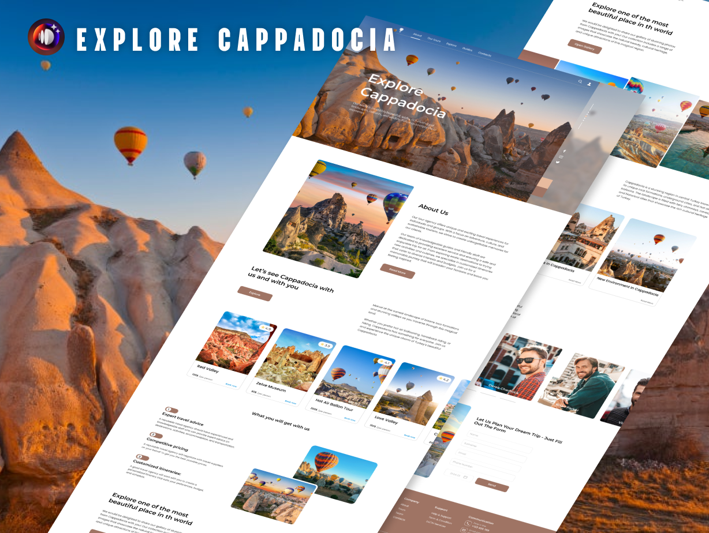
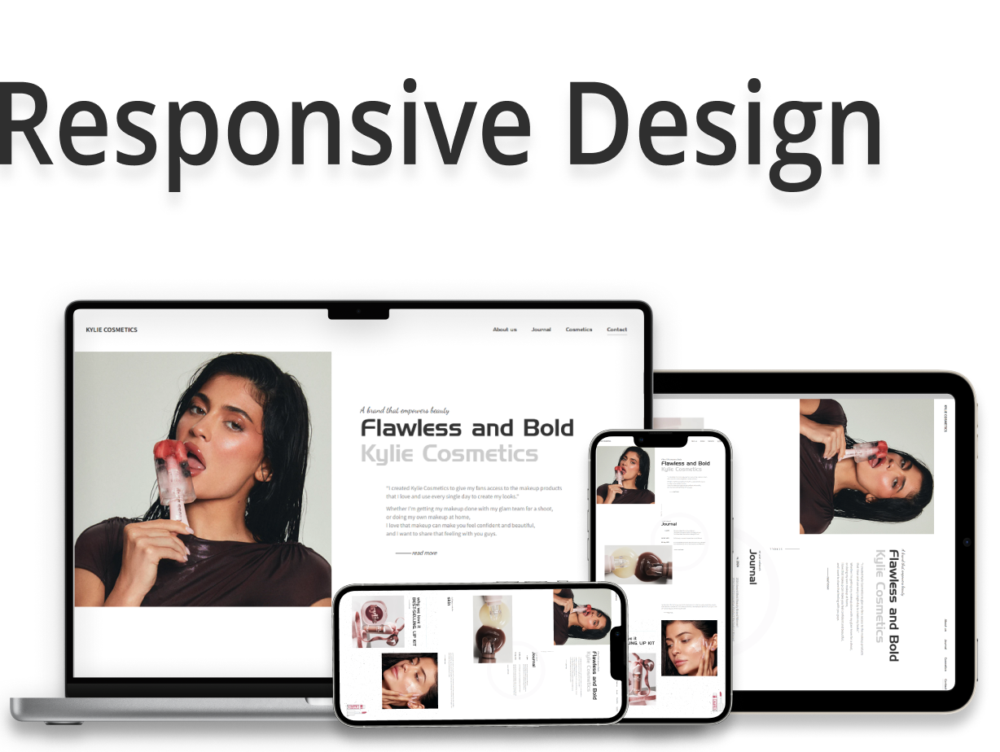
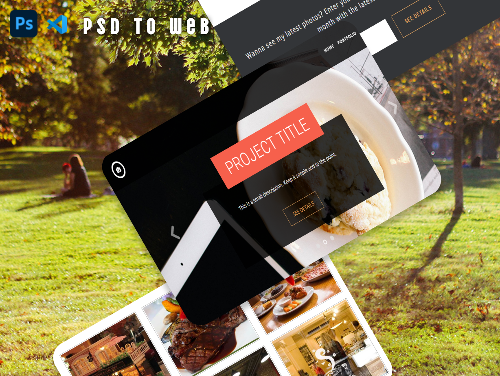
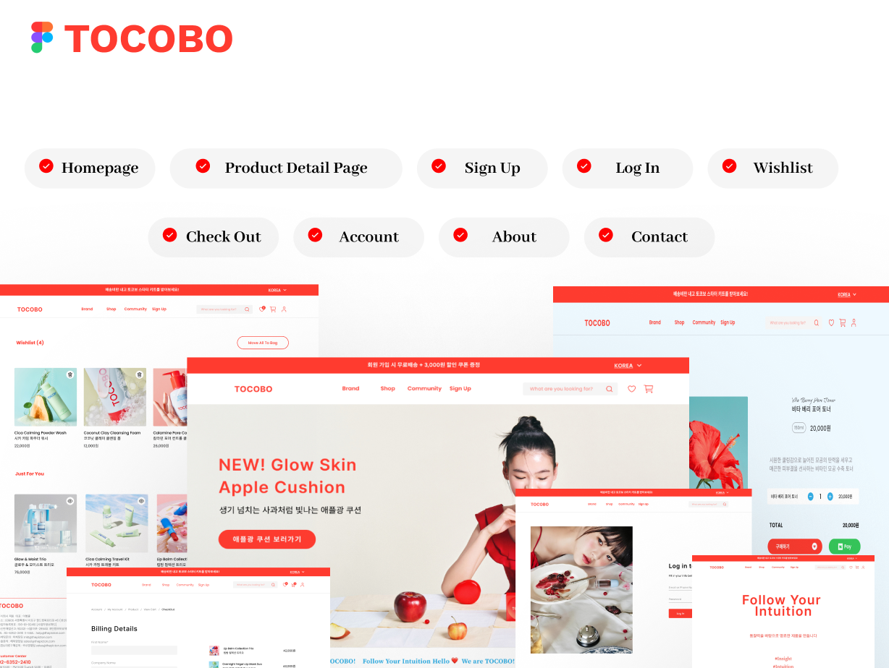
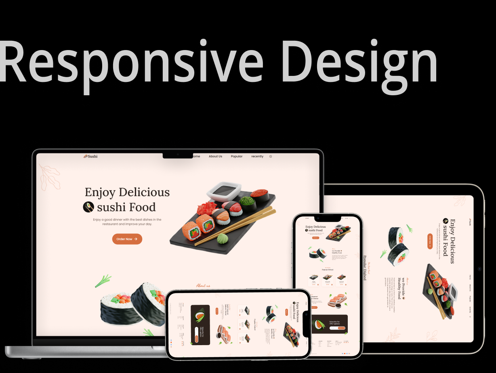
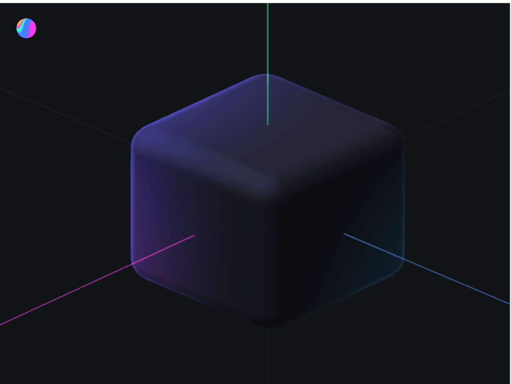
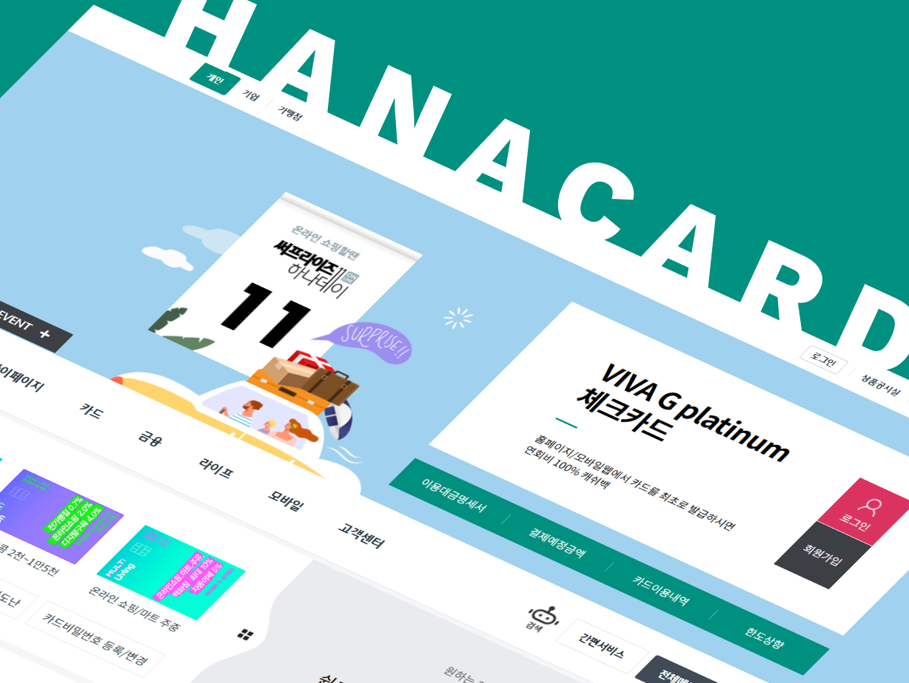
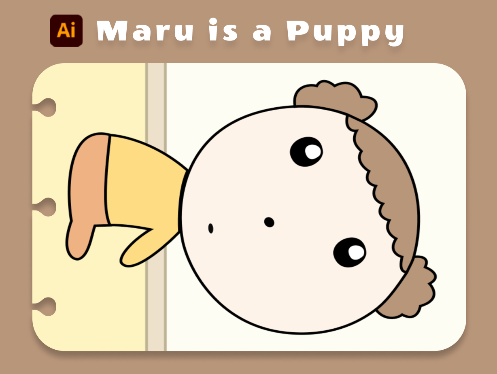
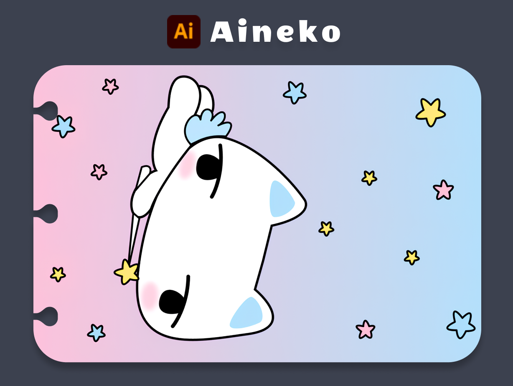

01 / SHOPPING APPH&MREACT · SPA
01 / SHOPPING APPH&MREACT · SPA
WEB PUBLISHER
NANA / WEB PUBLISHER
MAKE THE WEB FEEL GOOD.
구조를 이해하고, 디테일을 구현하며
더 나은 웹 경험을 만듭니다.
시맨틱 마크업과 반응형 레이아웃, 필요한 만큼의 인터랙션으로
보기 좋고 사용하기 편한 화면을 고민합니다.

SELECTED WORK / 01—13
호기심을 따라 만든
웹과 인터랙션.
작년 포트폴리오에 수록된 13개 작업을 다시 분류하고, 추가한 프로젝트 이미지를 연결했습니다.
프로젝트 13개를 표시합니다.
01 / SHOPPING APPH&MREACT · SPA
CAPPADOCIAMADE WITH DORA

04 / RESPONSIVE WEBKYLIECOSMETICSLAYOUT · JQUERY

05 / DESIGN TO CODEPSD→ WEBDESIGNED IN PHOTOSHOP

06 / CLICK-THROUGH PROTOTYPETOCOBOFIGMA · PAGE TRANSITIONS 07 / MOBILE UIFASHION
07 / MOBILE UIFASHIONSTYLEFIGMA TO WEB

08 / RESPONSIVE SITESUSHISEMANTIC · JAVASCRIPT
09 / INTERACTIVE 3DSPLINEKEYBOARD · MODELINGFICTIONGSAP · WEB

11 / ACCESSIBILITYHANACARDHTML · CSS · JQUERY

12 / DIGITAL DRAWINGMARUPEN TOOL · ILLUSTRATION
13 / DIGITAL DRAWINGAINEKOPEN TOOL · ILLUSTRATIONABOUT NANA
서로의 속도를 맞추며
좋은 팀워크를 만들어갑니다.
깔끔한 구조로
오래 쓰일 화면을.
유지보수와 확장을 고려한 구조와 정돈된 마크업을 지향합니다. 다양한 기기에서 일관된 경험을 만들고, 프로젝트의 목적에 맞는 기술을 선택해 화면에 구현합니다.
팀 안에서는 서로의 맥락과 속도를 존중하며 필요한 기술을 배우고 함께 문제를 풀어갑니다. 새로운 경험을 즐기고, 혼자 떠나는 여행과 좋아하는 아티스트의 공연에서 영감을 얻습니다.
작업 살펴보기CAPABILITIES / 03
사용해 온 기술과 도구,
작업으로 보여드립니다.
프로젝트에 사용한 기술과 시안 제작·개발 환경을 나누어 소개합니다. 프로젝트별 사용 기술은 이전 포트폴리오에 기재된 내용을 기준으로 정리했습니다.
웹 화면 구현
시맨틱 마크업과 반응형 UI를 바탕으로 화면을 만들고, 사용자 흐름에 필요한 동작을 연결합니다.
HTML5 · CSS3 · SASS · JAVASCRIPT기재된 기술 보기
작년 스킬 목록의 HTML5, CSS3, Sass, JavaScript와 프로젝트 설명의 시맨틱 마크업·반응형 구현을 반영했습니다.
인터랙션과 프레임워크
쇼핑 UI부터 모션 중심의 웹까지, 프로젝트에 맞는 라이브러리와 프레임워크를 적용했습니다.
REACT · JQUERY · GSAP기재된 기술 보기
H&M 작업에는 React, Node.js, JSX가, MAGMA·Cyberfiction 작업에는 GSAP가, Kylie Cosmetics·Hana Card 작업에는 jQuery가 기재되어 있습니다. PHP와 MySQL도 작년 스킬 목록에 포함되어 있습니다.
디자인과 프로토타이핑
화면 시안부터 3D 인터랙션까지, 아이디어를 시각적으로 구체화하는 도구를 다룹니다.
FIGMA · PHOTOSHOP · DORA기재된 도구 보기
Figma, Photoshop, Illustrator, Spline, Dora를 작년 포트폴리오의 디자인·도구 목록에서 옮겼습니다.
작업 도구와 협업
개발 환경과 버전 관리 도구를 활용하고, 팀의 요구에 맞춰 필요한 기술을 계속 익힙니다.
VS CODE · GIT · GITHUB기재된 도구 보기
VS Code, Command Line, Git, GitHub를 작년 포트폴리오의 도구 목록에서 옮겼습니다.
HOW I BUILD / 04
코드로 설명하는
구현 기준.
결과 화면과 함께 구조·반응형·접근성 기준을 설명하고, 실제 작업물에 적용한 내용만 사례로 제시합니다.
- 01 구조와 표준
- 랜드마크, 제목 단계와 폼 레이블을 의미에 맞게 사용합니다.
- HTML · SEMANTICS
- 02 키보드 접근성
- 명확한 포커스와 상태 전달, 키보드로 이용 가능한 흐름을 고려합니다.
- FOCUS · KEYBOARD
- 03 반응형 레이아웃
- 콘텐츠 우선순위를 유지하며 다양한 화면 폭에 맞춰 배치합니다.
- CSS · RESPONSIVE
- 04 운영을 고려한 코드
- 수정 범위와 관련 화면을 함께 살펴 변경 이후의 확인 항목을 정리합니다.
- QA · HANDOVER
MAINTENANCE APPROACH / 05
문제를 살피고,
수정 후 다시 확인합니다.
작년 포트폴리오에는 Kylie Cosmetics 반응형 개선과 Hana Card 웹 접근성 작업이 기재되어 있습니다. 아래는 세부 이력과 전후 결과를 보완하기 전, 변경 작업에 적용하는 점검 기준입니다.
-
01
OBSERVE
문제 상황 기록
재현 경로, 환경과 기대 결과를 구체적으로 확인합니다.
-
02
ANALYZE
원인과 영향 범위 파악
연결된 컴포넌트와 화면을 살펴 필요한 수정 범위를 정합니다.
-
03
VERIFY
수정 후 회귀 확인
주요 뷰포트와 키보드 흐름을 다시 점검해 의도치 않은 변화를 확인합니다.
-
04
DOCUMENT
변경 내용 공유
수정 이유와 영향, 남은 확인 사항을 기록해 후속 작업에 연결합니다.